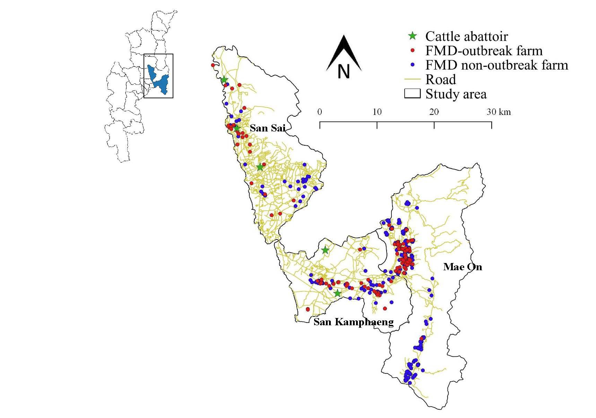
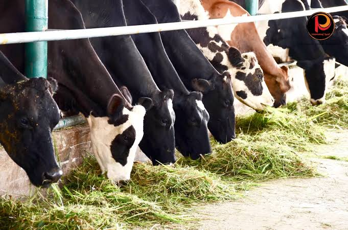

9. Exercise: apply the module to a published study
In this exercise you will read a published paper and use a dataset to answer eight questions. Each question uses one or more sections of these notes. Write short answers. Show your calculations. Present your answers in a presentation (for example, a short slide deck for the class), with one or more slides per task.
Materials
Paper: Sansamur C, Arjkumpa O, Charoenpanyanet A, Punyapornwithaya V. Determination of risk factors associated with foot and mouth disease outbreaks in dairy farms in Chiang Mai Province, Northern Thailand. Animals 2020; 10(3): 512. doi:10.3390/ani10030512 · mdpi.com/2076-2615/10/3/512
Dataset: Dairy_sim.xlsx has 450 dairy farms, one row per farm (sheet “Dairy_sim”; sheet “Explanation” describes every variable). Every variable is described in the table below.
Variable descriptions
| Variable | Explanation |
|---|---|
id | Farm ID |
villagename | Village name |
subdistrict | Subdistrict |
district | District |
gender | Gender of farmer |
age | Age of farmer |
expe | Experience of farmer (years) |
education | Education level of farmer |
number | Number of cattle |
status | Status of FMD outbreaks in farms (0 = non-disease; 1 = disease) |
previous | History of FMD outbreaks in the previous year |
NearRoad | Farm located near roadways |
type | Farm with tie-stall system |
contact | Having neighbour farm within 500 m radius |
water | Use tap water on farm |
waste | Farm with waste management |
slaughter | Farms located within a 5 km radius of cattle abattoirs |
together | Farms located near shared cattle grazing areas in a 10 km radius |
PurchaseWithoutQ | Purchase of a new cow without following quarantine protocol |
selling | Entrance of vehicle carrying the stock and/or cow out of the farm |
feces | Entrance of dung trader vehicles |
milk | Farms located within a 5 km radius of milk collecting center |
coorstaffV | Employing artificial insemination (AI) services with more than 1 staff member |
marketVisit | Farmers visit cattle markets 2 months before outbreaks |
neighb_count | Number of neighboring farms within 2 km radius |
shared_equip | The farm shares equipment with other farms |
staff_training | Farm staff have received formal biosecurity training |
Tools: Excel, and an online calculator for 2×2 tables (Epitools or OpenEpi; see the links in Section 8; Mantel–Haenszel: Section 8.4). For sample size use the formulas in Section 7.1.


status = 1 for a farm with an FMD outbreak and 0 for a farm without. Most risk factors are coded 1 = yes and 0 = no.Task 1. Research question
Read the abstract and the end of the Introduction. Write the objective of this study. Include the population, outcome, place, time period and comparison (Section 1.1).
Related section: 1.
Task 2. Type of study and study design
- What is the type of study?
- Explain the study design: how were farms selected, when were the outcome and the exposures measured, and in which direction does the investigation look (backward or forward in time)?
Related sections: 5 and 6. Read Section 2.2 of the paper (Materials and Methods).
Task 3. Dependent, independent and confounding variables
Complete the table. Use the variable descriptions above.
| Role | Your answer |
|---|---|
| Dependent variable (name and how it is defined) | |
| Independent variables: list at least six | |
| Possible confounders and reason why they meet the three conditions in Section 2.2 |
Related section: 2.
Task 4. Sampling method and units
- What is the target population?
- Which sampling method was used for the districts, for the cases and for the controls? (Section 6.1)
- What are the sampling unit and the epidemiological unit (unit of analysis)? Are they the same?
- Is there clustering in these data? Name the levels. (Section 7.2)
- If you could choose your own sampling method for this study, which would you choose and why? (Section 6.1)
Related sections: 4, 6 and 7.2.
Task 5. Sample size
Imagine that you are planning this study before collecting data. The objective is to detect an association between the main exposure (PurchaseWithoutQ) and FMD outbreak farms. Use the Kelsey case-control method (Section 7.1).
| Input | Value |
|---|---|
| Exposure among control farms (p₂) | Calculate from the dataset: the proportion of farms with status = 0 that have PurchaseWithoutQ = 1. Round to 2 decimals. |
| Smallest odds ratio worth detecting | OR = 2.0 |
| Confidence and power | 95% (two-sided α = 0.05) and 80% |
| Controls per case (r) | 1 |
| Finite population | The study population is N = 450 dairy farms. Apply the formula in Section 7.3 to the total sample size. This is an introductory approximation. |
| Dropout | 15% of interviews are expected to be refused or incomplete (Section 7.4). Apply this after the finite population correction. |
Fill in the table. Round up. Check your answers with an online calculator.
| Scenario | Cases | Controls | Total |
|---|---|---|---|
| A. Basic calculation, 1 control per case | |||
| B. Scenario A with finite population (N = 450) | |||
| C. Scenario B with 15% dropout |
Related section: 7.
Task 6. Appropriate analysis methods
- Which measure of association is appropriate for this design: odds ratio (OR) or risk ratio (RR)? Explain why.
- How can you deal with confounding in the analysis? Name two methods (Section 2.2).
- The paper reports adjusted odds ratios. In your own words, what does “adjusted” mean? Why might an adjusted OR differ from a crude OR? (Section 2.2)
Task 7. Unadjusted odds ratio
Calculate the unadjusted (crude) odds ratio for all of these risk factors: PurchaseWithoutQ, previous, NearRoad, contact, slaughter, together, selling, marketVisit, coorstaffV and staff_training.
- Make a 2×2 table (outbreak status × exposure) for each of the ten risk factors. In Excel use COUNTIFS, for example
=COUNTIFS($J:$J,1,$S:$S,1)counts farms with status = 1 and PurchaseWithoutQ = 1. You can also use a PivotTable. - Enter the counts in a calculator (Epitools or OpenEpi). Report the OR, the 95% confidence interval and the p-value of the uncorrected chi-square test (Pearson, without continuity correction) in the table below.
| Risk factor | OR | 95% CI | p-value (uncorrected chi-square) |
|---|---|---|---|
| PurchaseWithoutQ | |||
| previous | |||
| NearRoad | |||
| contact | |||
| slaughter | |||
| together | |||
| selling | |||
| marketVisit | |||
| coorstaffV | |||
| staff_training |
Task 7B. Mantel–Haenszel adjusted odds ratio
Farms with trained staff (staff_training = 1) may buy cattle differently and also have fewer outbreaks. It may therefore confound the link between PurchaseWithoutQ and FMD. Use an online calculator to adjust for it with the Mantel–Haenszel method (Section 8.4).
- Stratify. Make two 2×2 tables for status × PurchaseWithoutQ: one for staff_training = 0 and one for staff_training = 1. Report the OR of each stratum in the first table below.
- Calculate. Open the Epitools Mantel–Haenszel calculator (link in Section 8.4). Enter the two tables. Record the MH adjusted OR with its 95% confidence interval, the p-value, and the p-value of the test of homogeneity (Woolf's test or Breslow–Day test, whichever the tool reports) in the second table below.
- Compare. Calculate the change from the crude OR (Task 7) to the MH OR: (crude – MH) / MH × 100. Is staff_training a confounder? Check the rule of about 10% and the conditions in Section 2.2.
- Check homogeneity. Are the two stratum ORs similar? Is pooling appropriate? What would you do if they were very different?
- Interpret. Write two or three sentences that interpret the MH adjusted OR: the population, the outcome, the effect size, the 95% CI, and your conclusion. Say how it differs from the crude OR and why.
- Reflect. Why can MH adjust for only one or a few factors? What method adjusts for many factors at once?
2×2 table template. Fill in the counts for each stratum, then enter them in the calculator.
| Cases (status = 1) | Controls (status = 0) | Total | |
|---|---|---|---|
| Exposed (PurchaseWithoutQ = 1) | |||
| Unexposed (PurchaseWithoutQ = 0) | |||
| Total |
| Cases (status = 1) | Controls (status = 0) | Total | |
|---|---|---|---|
| Exposed (PurchaseWithoutQ = 1) | |||
| Unexposed (PurchaseWithoutQ = 0) | |||
| Total |
| Stratum | OR | 95% CI |
|---|---|---|
| staff_training = 0 | ||
| staff_training = 1 | ||
| Crude (all farms) |
| Result from the calculator | Your value |
|---|---|
| Crude OR (from Task 7) | |
| MH adjusted OR (95% CI) | |
| p-value for the MH OR | |
| Test of homogeneity (Woolf's or Breslow–Day test): name of test and p-value | |
| Change from crude to MH OR (%) |
Related sections: 2.2 and 8.4.
Task 8. Interpret the risk estimate
- Write a sentence that interprets the OR for the exposures.
- Explain why the exposure may increase or decrease the chance of an FMD outbreak.
- Write practical recommendations for farmers and for the Department of Livestock Development (DLD) to prevent and control FMD. Link each one to a result.